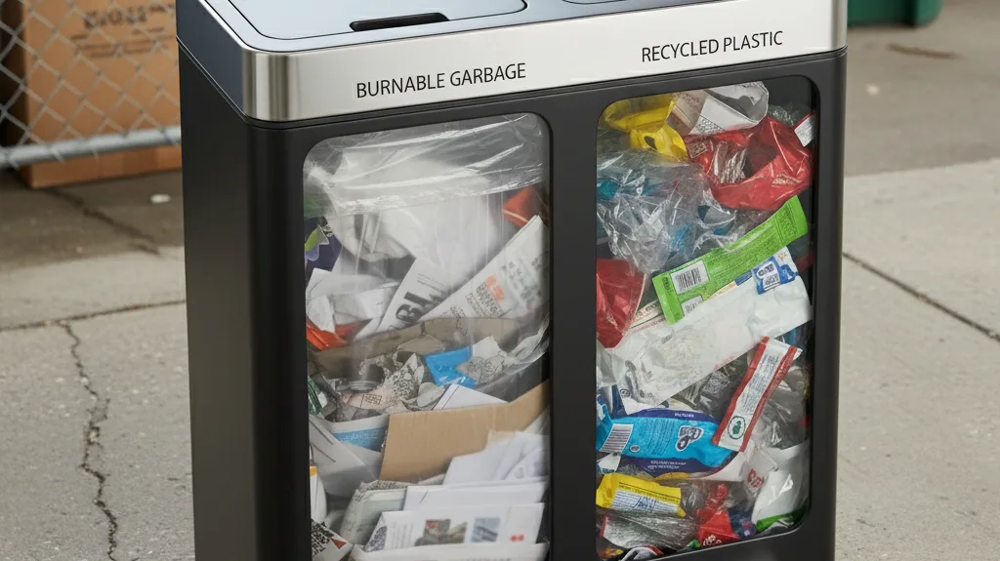
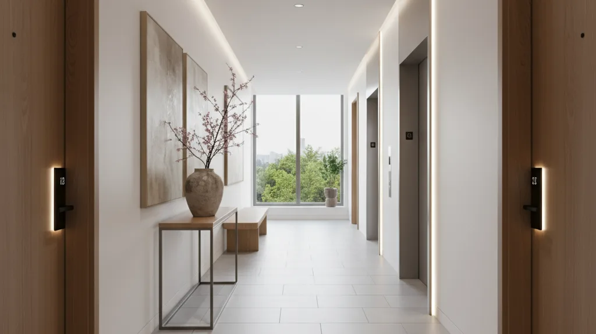
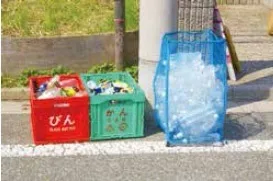

住まいのしおり
ホームファミーユ豊玉Ⅱ にお住まいの皆さまへ。
📢お知らせ（更新日）
- 2026年9月9日更新 ごみの種類ごとの出し方（可燃・不燃・プラスチック・古紙）を追加しました
- 2026年9月9日更新 ⚠️ 令和8年10月1日からプラスチックの分け方が変わります
- 2026年9月8日更新 粗大ごみの出し方と、区で収集できないものを追加しました
- 2026年9月7日更新 ゴミの収集曜日を追加しました
- 2025年10月27日更新
- 2025年10月23日更新
暮らしのご案内#
気になる項目をタップすると開きます。
🗑️ゴミの出し方について

1可燃ゴミ・容器包装プラゴミ等
ポリバケツに入りきらない大きい袋をお使いの場合、個別に分けて頂くか、集荷当日の朝（8:00まで）に出して頂くようご協力お願い致します。
⚠️ お願い
ゴミ収集員の方から、袋の口がきちんと結ばれていないと中身がこぼれたり収集が難しいとのご指摘がありました。必ず袋の口をしっかり結んでからお出しいただきますようご協力をお願いいたします。
2プラごみに出せるもの
リサイクルマークがある包装容器類のみです。これ以外のプラスチックは可燃ゴミとして出して下さい。
3ダンボールは畳んだ状態で
集積所のスペースは限られており、ほかの住人の方の妨げにならぬようご配慮お願い致します。
この建物の収集曜日
- 日
- 月
- 火
- 水
- 木
- 金
- 土
可燃ごみの収集日は毎週月曜日と木曜日です。
- 日
- 月
- 火
- 水
- 木
- 金
- 土
不燃ごみの収集日は第1・第3週の火曜日です。
- 日
- 月
- 火
- 水
- 木
- 金
- 土
プラスチックの収集日は毎週水曜日です。
- 日
- 月
- 火
- 水
- 木
- 金
- 土
古紙と古布の収集日は毎週火曜日です。町会の資源回収のため、区の収集日とは異なります。
- 日
- 月
- 火
- 水
- 木
- 金
- 土
びん・缶・ペットボトルの収集日は毎週土曜日です。
いずれも収集日の朝8時までに集積所へお出しください。
古紙・古布は町会の資源回収のため、区の収集日（水曜）ではなく火曜日です。
出典：練馬区「資源とごみの分け方と出し方」令和8年10月現在（豊玉北4丁目）
ごみの種類と出し方
見出しをタップすると開きます。
🔥可燃ごみ（月曜・木曜）
🆕 令和8年10月1日から、プラスチックの分け方が変わります
これまで可燃ごみだったプラスチック製品（歯ブラシ・ハンガー・おもちゃなど）が、
「プラスチック」として資源に出せるようになります。
※9月30日までは、これまでどおり可燃ごみへお出しください。
1出せるもの
生ごみ（水分をよく切ってください）／木の枝・草花（枝は長さ50cm・太さ10cm以下／草花の土は取り除いて）／ゴム製品（ゴム手袋・ゴムホース・長靴・ボール／ホースは50cm以下に切って）／革製品（バッグ・靴）／テープ類（ガムテープ・セロハンテープ・マスキングテープ）／保冷剤・乾燥剤／紙おむつ・生理用品（汚物を取り除いてから）
2資源に出せない紙類
写真／紙コップ／レシートなどの感熱紙／洗剤の空き箱／シュレッダーで細かくした紙／カップ麺の紙製容器 など
3資源に出せないプラスチック
まな板など厚み5mm以上があって固いもの／在宅医療用のプラスチック／汚れの落ちないプラスチック
⚠️ 花火・マッチ
必ず水に一晩つけてからお出しください。
4出し方
ふた付きのごみ容器、または透明・半透明の袋に入れて口をしばってください。
1回に出せるのは45リットルの袋で3袋までです。引っ越しや片付けでこれを超える場合は有料になりますので、事前に練馬清掃事務所（03-3992-7141）へご相談ください。
※おおむね30cm角を超えるものは粗大ごみです。
出典：練馬区「資源とごみの分け方と出し方」令和8年度版
🔩不燃ごみ（第1・第3 火曜）
1出せるもの
陶器・ガラス／金属類（針金ハンガー・使い捨てカイロ・アルミホイル など）／LED・白熱電球／電子体温計・電子血圧計／30cm角以下の小型家電（コードは束ねてください）
※金属製のなべ・やかん・フライパンは資源回収です。
※水銀を含む体温計・血圧計は清掃事務所にご相談ください。
⚠️ 刃物類は包んでください
包丁・はさみ・カミソリなどは、厚紙などで包んで「キケン」と書いてお出しください。
⚠️ 他の不燃ごみとは「別の袋」で出すもの
・蛍光管（購入時の箱や新聞紙などに包んで）
・モバイルバッテリー・加熱式たばこ・ガスライター・スプレー缶・カセットガスボンベ
中身が残っているガスライター・スプレー缶・カセットガスボンベ、膨張した充電式電池を含む製品は、清掃事務所へお持ちください（不燃ごみ収集日に職員へ直接お渡しすることもできます）。
2収集日について
「第1・第3 火曜」＝その月の1回目と3回目の火曜日です。
月に火曜が5回ある場合、5回目の週は収集がありません。
※おおむね30cm角を超えるものは粗大ごみです。
出典：練馬区「資源とごみの分け方と出し方」令和8年度版
♻️プラスチック（水曜）
🆕 令和8年10月1日から、プラスチックの分け方が変わります
これまで可燃ごみだったプラスチック製品（歯ブラシ・ハンガー・おもちゃなど）が、
「プラスチック」として資源に出せるようになります。
※9月30日までは、これまでどおり可燃ごみへお出しください。
1容器包装プラスチック
プラマーク（プラ）が目印です。
ボトル類（シャンプー・リンス・洗剤・乳酸菌飲料の容器）／パック類（カレールー・味噌・豆腐の容器）／カップ類（カップ麺・プリンの容器）／トレイ類（肉・魚のトレイ・刺身皿・せんべいの仕切り）／袋・フィルム・ラベル類（詰め替え用の袋・レジ袋・ペットボトルのラベル）／発泡スチロール箱・緩衝材（果物のネット・気泡緩衝材＝プチプチ）／その他（ペットボトルのキャップ・インスタントコーヒーのふた・薬のシート）
※発泡スチロール・緩衝材はプラマークの表示がなくても出せます。
2製品プラスチック（令和8年10月から）
入浴・洗面用品（洗面器・手桶・歯ブラシ・コップ）／台所用品（タッパー・フォーク・スプーン・スポンジ・ポリ袋・ポリ手袋・ストロー・弁当箱）／文具類・おもちゃ（クリアファイル・定規・ブロック）／日用品（ハンガー・CD・DVD（ケース含む）・じょうろ）
※多少、他の素材が混ざっていても回収します。
※弁当箱のゴムパッキンは可燃ごみへ。
※ひも類は長さ50cm以下、レジャーシート類は一辺50cm以下に切ってください。
3出し方
汚れのあるものはすすいで汚れを落としてください（すすいでも落ちないものは可燃ごみへ）。
ふた付きのごみ容器、または透明・半透明の袋に入れて口をしばってください。
容器包装プラスチックと製品プラスチックは、分けずに同じ袋に入れてください。
⚠️ 二重袋にしないでください
回収後に異物を手作業で取り除いているため、小袋に入れたものはそのままお出しください。
⚠️ プラスチックに出せないもの
・モバイルバッテリー・加熱式たばこ・ハンディファン → 不燃ごみへ（他の不燃ごみとは別の袋で）
・ペットボトル本体 → びん・缶・ペットボトルへ
・在宅医療用のプラスチック → 可燃ごみへ
・刃物などがついているもの → 厚紙などで包んで「キケン」と書いて不燃ごみへ
・金属部品を多く含むもの（傘・リモコン・ドライヤー） → 不燃ごみへ
・まな板など厚み5mm以上のもの／シリコン製品／ゴム製品 → 可燃ごみへ
・おおむね30cm角を超えるもの（衣装ケースなど） → 粗大ごみへ
出典：練馬区「資源とごみの分け方と出し方」令和8年度版
📄古紙・古布（火曜）
1出せるもの
新聞（折り込みチラシも一緒に）／雑誌（本・パンフレット・お菓子の箱・贈答品の箱・包装紙も）／ダンボール（必ず畳んで）／紙パック（すすいで乾かし、切り開いて。アルミ付きも出せます）
2雑がみも資源に出せます
ティッシュペーパーの箱／お菓子の箱／紙袋／メモ用紙／包装紙／トイレットペーパーの芯／封筒・はがき／割り箸の袋／値札・商品タグ など
雑誌などに挟むか、紙袋に入れてお出しください。
※窓付き封筒やティッシュの箱は、ビニールなどをはずしてください。
⚠️ 出し方のお願い
・種類ごとにひもで束ねてください。レジ袋やビニール袋には入れないでください。
・ダンボールとその他の古紙は、回収する車両が違います。
・雨の日も回収しています。
3古紙に出せないもの
写真／紙コップなど防水加工されたもの／カバンや靴の詰め物／レシートなどの感熱紙／シュレッダーで細かくした紙／においが付着したもの など
→ 可燃ごみへお出しください。
出典：練馬区「資源とごみの分け方と出し方」令和8年度版
🛋️粗大ごみの出し方
⚠️ 粗大ごみは集積所には出せません。申込制・有料です。
1粗大ごみとは
30cm×30cm×30cm の立方体に入らないものが粗大ごみです。
※粗大ごみに該当する品目は、分解・切断しても粗大ごみのままです。
2申し込む
お電話 03-5703-5399
受付時間 8:00〜19:00（月〜土・祝日を含む／12月29日〜1月3日を除く）
※申し込む前に、品目の高さ・幅・奥行を測っておいてください。
※ご希望の日に収集できない場合があります。お早めにどうぞ。
3料金を払う
🆕 令和8年4月1日から、インターネットで収集を申し込むとオンライン決済（キャッシュレス決済）が使えます。有料粗大ごみ処理券を買いに行く必要がありません。
お支払い後、縦横10cm以上の紙やガムテープなどに「収集日」と「受付番号の下5桁」を書いて、すべての品目の見やすい場所に、テープで4辺をしっかり貼り付けてください。
※紙が貼られていないものは収集できません。
※オンライン決済では領収書は発行されません（必要な方は有料粗大ごみ処理券をご利用ください）。
※持込みの場合はオンライン決済をご利用いただけません。
4出す
粗大ごみ置き場、または敷地入口付近に出してください。
収集日当日の朝8時までにお願いします（収集は8時〜16時の間に行います）。
出典：練馬区「資源とごみの分け方と出し方」令和8年度版
🚫区では収集できないもの
下記のものは練馬区では収集できません。引っ越しや買い替えのときはご注意ください。
1処理困難物
消火器／塗料／灯油・ガソリン／タイヤ／ピアノ／プロパンガスボンベ／農薬・劇薬／自動車バッテリー／レンガ／ブロック・石／土・砂 など
購入店やメーカー、専門の処理業者へご依頼ください。業者が分からない場合は練馬清掃事務所（03-3992-7141）へご相談ください。
2エアコン・テレビ・冷蔵庫・冷凍庫・洗濯機・衣類乾燥機
家電リサイクル法の対象です。新たに購入するお店またはその商品を購入したお店に引き取ってもらうか、下記へお申し込みください。
家電リサイクル受付センター 0570-087200（月〜金 9:00〜17:00・祝日と年末年始を除く）
インターネットは24時間受付：kaden23rc.jp
※メーカーや型番を調べてからお申し込みください。収集・運搬料金とリサイクル料金がかかります。
3家庭用パソコン
メーカーによる回収、または宅配便による回収をご利用ください。区と協定を結んでいるリネットジャパンリサイクル株式会社（0570-085-800）が回収を行っています。
※プリンターやスキャナーは粗大ごみです。
⚠️ 使用済みの注射針は集積所に出さないでください
在宅医療で使用した注射針は、専用の回収容器に入れて、購入した薬局へお戻しください。
出典：練馬区「資源とごみの分け方と出し方」令和8年度版
練馬区のご案内（外部リンク）
お互いがマナーを守り、住みやすい環境を保っていただけますよう
ご理解・ご協力をお願い申し上げます。
🏢共用部分の扱いについて

1ゴミの放置・私物を置かない
共用部分にゴミの放置、私物（☂️傘など）を置かないようにしてください。
特に、廊下、玄関ドア、共用階段、郵便受け付近、エントランス通路などは、災害時避難通路にもなり他の住人の方が利用する場所ですので、私物を放置しないようにし、清潔な状態を保ちましょう。
2🧯 消防設備をふさがない
火災や事故を防ぐため、共用部分には非常ベルや消火器などが設置されています。これらの設備を妨げないようにしましょう。
3📦 宅配ボックスは早めに
宅配ボックスは限りがあります。荷物の到着を確認できましたら、できるだけ早めに取り出してください。スムーズな循環が共同生活を快適にします。ご協力をお願いします。
4🔒 非常用階段の施錠
エントランス左側の非常用階段をご利用の際は、防犯・安全確保のため開錠後、必ず施錠していただきますようお願いいたします。
⚠️【重要】駐輪場扉の施錠徹底のお願い
駐輪場扉を開閉時に使用したストッパーは、出入り後必ず外し、扉が閉まったことを確認してください。
扉の開けっ放しは、不審者の侵入を許すことにつながります（過去に侵入事案あり）。
皆様の防犯と安全確保のため、ワンアクションのご協力をお願いいたします。
5👶 階段下スペースについて
階段下スペースは、ベビーカー置き場としてご利用いただけますが、スペースに限りがありますので、他の居住者の方も気持ちよく利用できるよう、譲り合ってご使用ください。
6🧹 北側窓格子の清掃
不定期ではございますが、北側窓格子を拭き掃除する場合がございます。予めご了承下さい。
共用部分は、全ての住人が利用する場所であり、快適な共同生活を維持するために大切な場所です。
お互いがマナーを守り、住みやすい環境を保っていただけますようご理解・ご協力をお願い申し上げます。
🥫ビン・缶・ペットボトル回収について

練馬区では、飲食用びん・缶・ペットボトルを専用の回収用コンテナ・袋で資源回収しています。中身は、空にしてから出してください。
⚠️ 回収場所にご注意ください
回収場所は、可燃ごみや不燃ごみの通常の場所ではありません。
毎週土曜日、ゴミ箱の前に置かれているコンテナです。
出し方
1コンテナ・袋の設置
週1回、「飲食用びん・缶・ペットボトル回収の日」の午前6時30分までに、決められた場所に回収用コンテナ・袋（下の写真）を設置します。最初に出す方は、回収用コンテナを組み立ててください。
2午前9時までに直接入れる
午前9時までに回収用コンテナ・袋に直接入れてください。（ビニール袋等は持ち帰ってください）
3色で分けて入れる
飲食用びんは赤色のコンテナ、飲食用缶は緑色のコンテナ、ペットボトルは青い回収袋に、それぞれ入れてください。

※台風や降雪の場合には、回収用コンテナ・袋の設置・回収を中止することがあります。その場合は、次週以降の回収日に出してください。
🚨夜間・休日緊急連絡先について

夜間や休日などに「火災・漏水・警報音」が発生した際は、下記の緊急対応センターに連絡してください。
⚠️ 緊急対応センターでは受けられないもの
「鍵の紛失、室内の不具合」等につきましては邑ハウジングでの対応になりますので、緊急対応センターでの対応はできません。受付時間内に邑ハウジングまでお問い合わせください。
⚠️ 費用について
お客様の過失やトラブルの状況により、休日夜間対応は有料となります。ご了承ください。